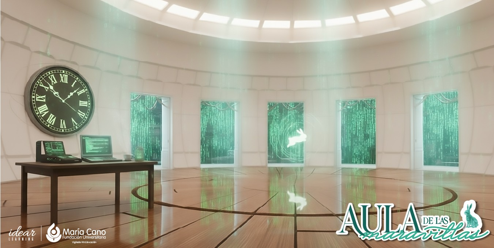
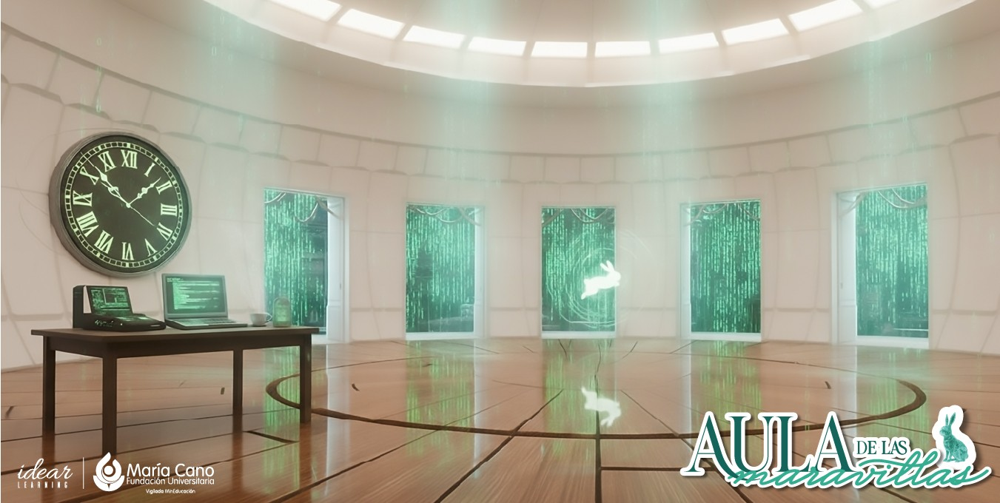

Integración de la Inteligencia Artificial
La Inteligencia Artificial (IA) impulsa la innovación pedagógica, la analítica académica y el desarrollo de competencias digitales en la Fundación Universitaria María Cano, fortaleciendo su compromiso con la calidad y la excelencia formativa.
Medellín
Neiva
Popayán
Cali
📘 Introducción
Este informe presenta los resultados reales de las estrategias de incorporación de IA registradas en 2025, incluyendo su impacto en:
🎯 Participación Institucional
Grado de Madurez Institucional
| Nivel | Descripción | Porcentaje |
|---|---|---|
| Inicial | Exploración del uso de herramientas IA | 38% |
| Intermedio | Integración formal en clases y prácticas | 47% |
| Avanzado | Estrategias replicables e institucionales | 15% |
🔧 Tipología de Uso de la IA
| Tipo de Uso | Descripción | Ejemplos |
|---|---|---|
| Docencia Asistida | ChatGPT, Copilot y Gemini para diseño de clases | Ingeniería de Software, Psicología |
| Práctica Profesional | Simulaciones y análisis de casos | Fisioterapia, Fonoaudiología |
| Evaluación Automatizada | Rúbrica y retroalimentación automática | Ingeniería de Software, Psicología |
| Investigación Aplicada | Modelos predictivos y análisis de datos | Ingeniería de Software, Innovación |
| Gamificación y Aprendizaje Interactivo | Uso de entornos digitales y juegos educativos con IA para el desarrollo de competencias cognitivas y lógicas. | Circuit Builder (CodeLogic Quest) – Ingeniería de Software |
🧭 Lectura Estratégica Institucional
El análisis DOFA revela una institución en madurez intermedia hacia la innovación educativa, con un ecosistema de docentes y programas que han adoptado la IA como parte de su práctica pedagógica.
✅ Fortalezas + Oportunidades
Reflejan una madurez institucional creciente y la disposición de la comunidad académica para liderar la innovación educativa con IA. Existe una base sólida de experiencias, motivación docente y articulación intersede.
⚠️ Debilidades + Amenazas
Evidencian la necesidad de un marco de gobernanza institucional para la IA, con indicadores de impacto, lineamientos éticos y fortalecimiento docente permanente frente al rápido avance tecnológico.
🚀 Proyección Estratégica
La combinación de fortalezas y oportunidades consolida un modelo de innovación educativa sostenible, donde Ingeniería de Software y MCV actúan como eje articulador para impulsar la transformación digital de todos los programas académicos.
📋 Apuestas Institucionales
Impulsar una Estrategia Institucional de la Innovación con IA
Seguir fortaleciendo la formación para profesores y administrativos en competencias digitales avanzadas
Integrar la IA en los procesos Curriculares y de Evaluación
Fomentar proyectos interdisciplinarios y de impacto social con IA
Articular IA en los diferentes procesos Administrativos
Usos educativos de la Inteligencia Artificial en la FUMC:
🔑 Conclusiones Clave
🏥 Programas de Salud
Fisioterapia, Fonoaudiología, Terapia Ocupacional, Psicología y Nutrición y Dietética aplican la IA en la práctica clínica, la simulación de casos, la búsqueda y análisis de evidencia científica, y la creación de materiales educativos interactivos.Se destacan herramientas como ChatGPT, Canva AI, Complete Anatomy, SciSpace, Gemini y PRAAT, empleadas en la generación de recursos didácticos, estudios de caso, y análisis de voz, lenguaje y movimiento, promoviendo el aprendizaje basado en evidencia y la formación integral del estudiante en entornos simulados y reales.
💼 Ciencias Empresariales
Administración y Contaduría utilizan la IA en en la toma de decisiones estratégicas, análisis financiero y desarrollo de competencias gerenciales. Se utilizan plataformas como Power BI, Copilot y ChatGPT para la automatización de cálculos financieros, la generación de informes, simulaciones de casos empresariales, y la formulación de ideas de negocio. Estas estrategias potencian la eficiencia en la gestión y el pensamiento analítico en contextos reales del entorno económico y contable..
💻 Ingeniería de Software
Aplica la IA en la programación, el diseño de sistemas expertos y la analítica de datos, promoviendo soluciones inteligentes orientadas a la eficiencia y la innovación tecnológica. Las estrategias se centran en la automatización de procesos académicos, el desarrollo de sistemas inteligentes y la integración de hardware y software para resolver problemas reales. Se destacan proyectos con Tinkercad, NotebookLM y ChatGPT en asignaturas como Sistemas Expertos, Inteligencia Artificial y Modelación y Simulación, fortaleciendo el aprendizaje práctico, la innovación y el pensamiento computacional aplicado.
🧩 Estrategias Destacadas
💼 Administración
- Generación de ideas de negocio y modelos Canvas con ChatGPT y Copilot.
- Uso de IA en análisis contable, diseño de hojas de vida y toma de decisiones.
- Implementación de Power BI con IA para visualización de datos e inventarios.
- Uso de Gemini y Copilot para análisis geopolítico, estudios de caso y diseño de procedimientos ISO.
- Aplicación de IWeaver y Google Sites para creación de flujogramas, códigos QR y páginas web.
🧬 Contaduría Pública
- Uso de IA para análisis normativo, simulaciones de nómina, interpretación tributaria y comparación de indicadores financieros.
- Integración de ChatGPT y Copilot para análisis de estados financieros, generación de reportes contables y validación de resultados.
- Empleo de IA en la creación de materiales de aprendizaje: crucigramas, presentaciones y estudios de caso.
- Validación de resultados IA con criterio profesional y revisión docente para fortalecer el pensamiento crítico.
💻 Ingeniería de Software
- Uso transversal de NotebookLM para síntesis de información y aprendizaje autónomo.
- Aplicación de Tinkercad y ChatGPT para prototipado, simulación de procesos y depuración de código asistida por IA.
- Desarrollo de sistemas expertos y agentes inteligentes en proyectos de IA aplicada.
- Implementación de IA en bases de datos, bodegas de datos y gestión TIC para búsqueda de recursos libres y análisis automatizado.
- Aplicación transversal de IA en proyectos de aula, integrando generación de contenidos, análisis automatizado y evaluación con rúbricas inteligentes.
- Formación en prompts engineering y ética en el uso responsable de la inteligencia artificial.
🧠 Psicología
- Diseño de materiales y recursos didácticos con herramientas como ChatGPT-5, Gamma, Consensus y notebooks digitales, aplicadas en presentaciones, rúbricas y análisis de casos.
- Uso de IA para la generación y análisis de casos clínicos y situaciones de entrevista, fortaleciendo el aprendizaje aplicado y la reflexión profesional.
- Elaboración de estudios de caso y materiales de apoyo multimedia (podcasts, infografías y esquemas) a partir de fuentes académicas.
- Síntesis y organización de información compleja, mediante herramientas de IA para facilitar la comprensión de temas teóricos y clínicos.
- Búsqueda y análisis de evidencia científica orientada al desarrollo de pensamiento crítico y competencias investigativas.
🏥 Estrategias Destacadas
🩺 Fisioterapia
- Uso de ChatGPT, Gemini y Copilot para búsqueda de evidencia científica, creación de casos clínicos y síntesis de información biomédica.
- Aplicación de herramientas como Tinkercad, Filmora, CapCut y Gamma.app para diseño de presentaciones, videos y simuladores de práctica clínica.
- Integración de IA en análisis de riesgos biomecánicos, rehabilitación, tele-rehabilitación y generación de reportes automatizados.
- Empleo de software QGIS, Google Maps y Docus AI para georreferenciación, análisis de movimiento y correlación clínica.
- Desarrollo de material educativo interactivo (quiz, videos, cartillas) con Canva, Fliki y Pictory.
🧑⚕️ Terapia Ocupacional
- Diseño de prompts para objetivos terapéuticos y simulación de casos clínicos.
- Creación de bancos de actividades terapéuticas, recursos artísticos y presentaciones dinámicas con IA.
- Uso de IA para simulación de procesos de intervención y evaluación del desempeño funcional.
🔊 Fonoaudiología
- Uso de herramientas IA (OperaVOX, PRAAT, SONIC Visualiser) para análisis acústico de voz y habla.
- Implementación de Canva, Miro, Gamma, Quizziz y Magic Studio para diseño de recursos visuales, presentaciones y materiales didácticos.
- Aplicación de IA en simulación de casos clínicos y generación de portafolios profesionales.
- Uso de Khanmigo y ChatGPT como tutores personalizados para fortalecer la comprensión y la comunicación oral.
- Integración de modelos de simplificación de texto y análisis semántico (WordNet, NLTK) en comprensión lectora y lingüística.
🥗 Nutrición
- Uso de ChatGPT, Gemini y Napkin para rastreo de evidencia científica, generación de imágenes y presentaciones.
- Creación de casos, juegos y preguntas tipo ICFES con IA.
- Uso de IA para formular preguntas críticas, construir materiales de repaso y organizar contenidos personalizados.
- Lineamientos de uso ético y pedagógico de IA implementados en todas las asignaturas.
🏛️ Estrategias Destacadas
🧠 Bienestar Institucional
- Implementación del Taller Psicopedagógico de IA como estrategia de acompañamiento académico para todos los programas y semestres.
- Promueve el uso consciente y educativo de la IA para fortalecer el aprendizaje autónomo, la autorregulación emocional y el pensamiento crítico.
- Cada docente puede agendar el taller con la Coordinación de Desarrollo Humano para adaptarlo a las necesidades de su curso.
🚀 Innovación y Emprendimiento
- Taller de Creación de Contenido con IA: fomenta la creatividad mediante herramientas generativas para diseñar textos, imágenes y campañas.
- IA para la Vida: promueve la alfabetización digital y el uso responsable de la IA en el estudio, el trabajo y la comunicación cotidiana.
- Taller de Empleabilidad como Emprendedor con IA: fortalece el perfil profesional desde el pensamiento innovador y emprendedor.
📚 Biblioteca
- Lidera la estrategia IA & Prompts enfocada en el desarrollo de competencias investigativas y redacción académica asistida por IA.
- El taller enseña a formular prompts efectivos para optimizar la búsqueda, síntesis y análisis de información científica.
- Se oferta semestralmente y está disponible para todos los programas académicos, promoviendo un uso ético y crítico de la IA.
🔬 Investigación
- Desarrolla webinars y talleres sobre fundamentos, herramientas y aplicaciones de la IA generativa en investigación y desarrollo tecnológico (I+D+i).
- Implementa un Repositorio Institucional de IA con materiales de aprendizaje, guías, artículos científicos, normas internacionales y recursos éticos sobre IA.
- Fortalece la gestión del conocimiento y la producción científica, posicionando la IA como eje transversal de la innovación institucional.
🏛️ Estrategias Destacadas
👩🏫 Asesores Pedagógicos
- Diseño de rúbricas inteligentes con ChatGPT: utilización de IA generativa para estructurar criterios de evaluación coherentes con los resultados de aprendizaje, mejorar la redacción de descriptores y optimizar la retroalimentación formativa.
- Implementación de plataformas Irubric y Rubrika potenciadas con IA: estas herramientas aplican algoritmos de análisis automático para verificar consistencia, redundancia y nivel de desempeño en las rúbricas, facilitando una evaluación más objetiva y precisa.
- Gamificación evaluativa con Mentimeter y Padlet asistidos por IA: empleo de analítica algorítmica para interpretar respuestas en tiempo real, generar visualizaciones interactivas y medir participación estudiantil como insumo para la retroalimentación.
- Análisis automatizado de resultados con Google Sheets y Excel (Copilot): aplicación de funciones inteligentes basadas en IA para identificar tendencias, generar visualizaciones dinámicas y construir informes de desempeño académico.
- Desarrollo de simuladores educativos con Skywork.ai integrados a Moodle: uso de IA generativa para crear entornos virtuales interactivos que replican situaciones reales de enseñanza y permiten al estudiante aprender por experimentación.
Estas estrategias consolidan un modelo pedagógico apoyado en IA, que integra automatización, analítica educativa y creatividad docente para fortalecer la calidad formativa y la innovación institucional.
🌟 El Aula de las Maravillas (Formación)
 

Módulos
MÓDULO 1
Introducción (20 minutos)
- a) Bienvenida al programa: objetivos y metodología
- b) Guía de navegación: cómo aprovechar al máximo el autoestudio
- c) El arte de conversar con la IA para obtener lo que necesitas.
- d) Evaluación diagnóstica: nivel de conocimiento previo en previo en IA
- e) ¿Por qué un docente debe dominar las IA generativas?
MÓDULO 2
Fundamentos de IA generativa (20 minutos)
- a) Conceptos clave y evolución
- b) Tipos de modelos existentes
- c) Uso responsable de IA para generar contenidos
- d) ¿Cómo funcionan los modelos de lenguaje?
Módulos
MÓDULO 3
IA generativa para la docencia (45 minutos)
- a) Creación de contenido: ChatGPT, Gemini y Copilot (otros)
- b) Diseño de actividades evaluativas y de aprendizaje
- c) Adaptación de contenidos a distintos niveles de aprendizaje
- d) Diseño de lecciones completas con IA
- e) Gamificación del aula
- f) ¿Qué es la instrucción avanzada? (prompting avanzado)
MÓDULO 4
Casos prácticos para docencia con IA (30 minutos)
- a) Creación de historietas con voces personalizadas
- b) Redacción asistida para generar una guía didáctica
- c) Creación de un cuestionario para evaluación
- d) Generación de narraciones para un podcast educativo
- e) Experiencia inmersiva: Chicharrón
- f) Generación de un mapa conceptual
- g) Creación de presentación de diapositivas
- h) Vídeo: Bebé insatisfecho
- i) Imagen: Tu foto como cómic
Módulo
🎓 MÓDULO 5 — Entrega Final
Este módulo marca la finalización del curso. Los participantes desarrollarán un producto integrador aplicando todos los conceptos de IA generativa aprendidos.
🎓 Conclusiones
- ✅ La documentación de estas 133 experiencias de IA representa evidencia directa de innovación pedagógica, transformación digital y mejora continua, dimensiones valoradas en procesos de acreditación de alta calidad.
- ✅ La presencia de múltiples estrategias en diferentes sedes y modalidades muestra una cultura de experimentación y apropiación tecnológica enseñanza, evaluación e investigación
- ✅ Se requiere gobernanza institucional por parte del profesorado.Este movimiento espontáneo constituye una base sólida para crear redes interprogramáticas de innovación con IA.
- La IA se ha convertido en un catalizador de cambio en la práctica docente y en la formación estudiantil. El siguiente paso es fortalecer una cultura institucional de innovación sostenible, basada en la colaboración interdisciplinaria y la evaluación del impacto educativo.
💡 Mensaje Final
La IA no reemplaza la enseñanza humana; la potencia.
La Fundación Universitaria María Cano está preparada para ser referente nacional en innovación educativa con IA, integrando tecnología, ética y humanismo.